Paramètres
Les paramètres sont atteints via le menu des trois points verticaux puis par la sélection de l'option Paramètres.
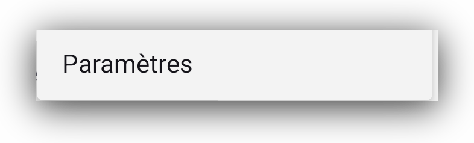
Ils sont divisés en 5 groupes :
[Général] (./settings.md#settings-general)
[Permissions] (./settings.html#settings-permissions)
[Données] (./settings.md#settings-data)
[Outils Développeurs] (./settings.html#settings-developer-tools)
[À propos] (./settings.md#settings-about)
Regardons chacun de ceux-ci.
Paramètres : Général
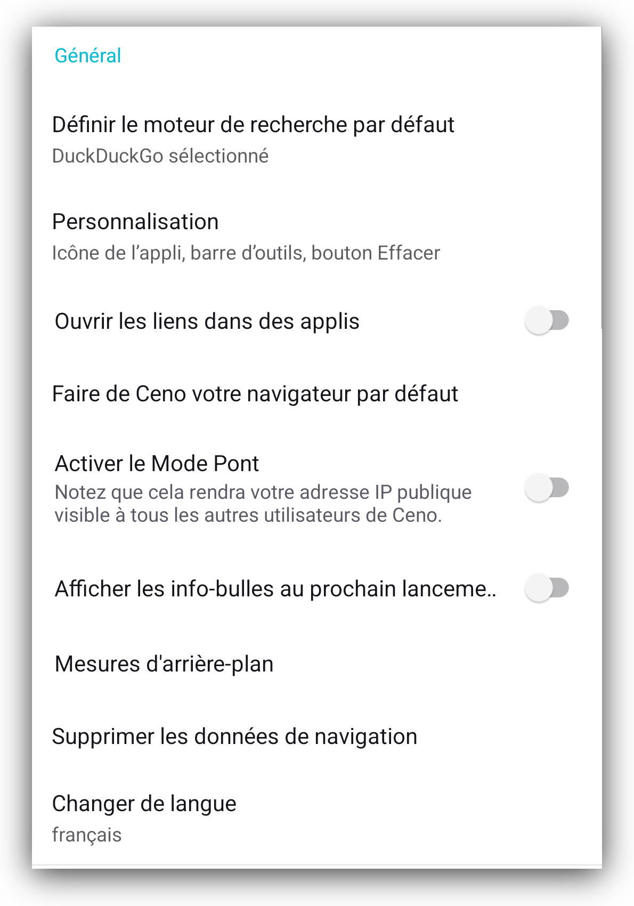
Vous êtes probablement familier avec la plupart de ces paramètres car ils sont similaires aux options disponibles dans d'autres navigateurs. Dans les sections suivantes, nous allons décrire brièvement les principaux réglages.
Définir le moteur de recherche par défaut
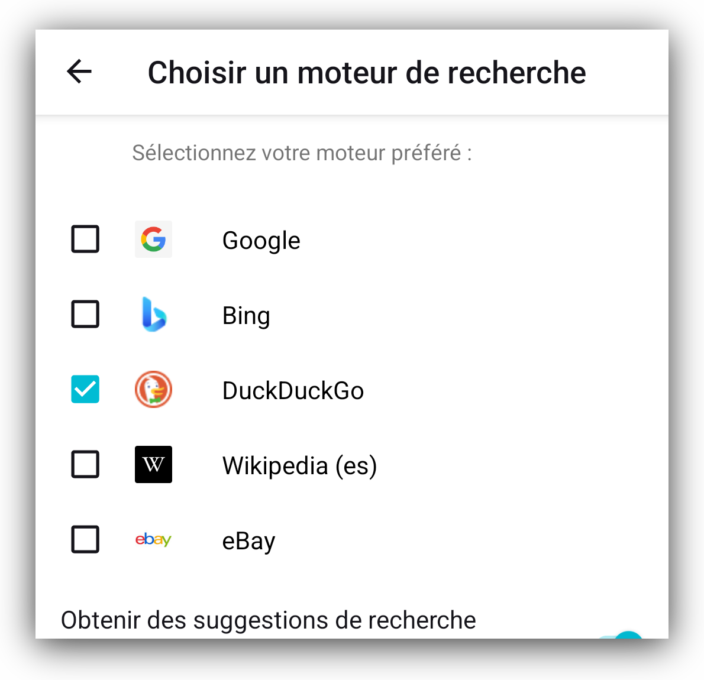
Ce paramètre vous permet de définir le moteur de recherche par défaut pour le navigateur Ceno , en activant ou en désactivant les options fournies.
Personnalisation
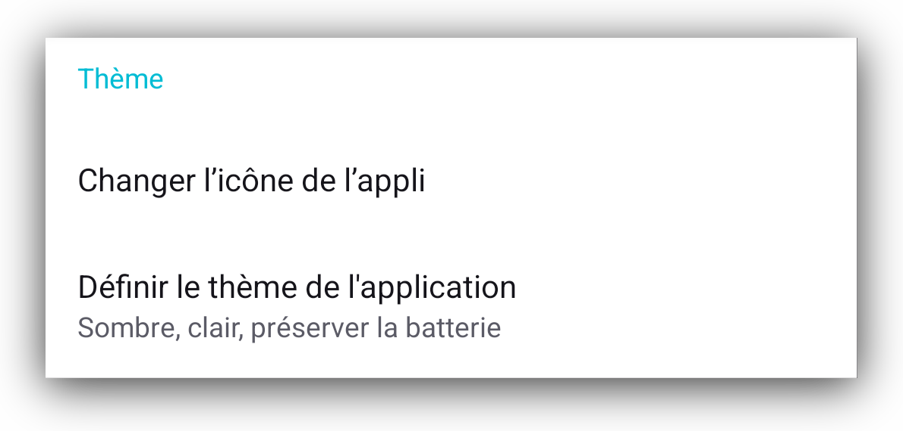
Encore une fois, ces options sont essentiellement auto-descriptives.
Nous attirons votre attention sur une option qui pourrait ne pas exister dans d'autres applications. Ceno vous permet de changer son icône de lancement ce qui peut être utile dans certaines circonstances. Nous vous offrons plusieurs options parmi lesquelles choisir.
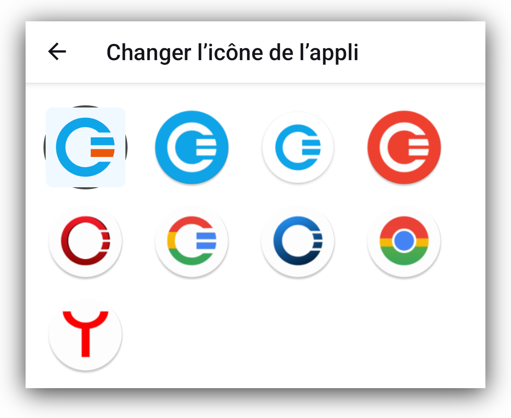
Activez le mode pontpasserelle
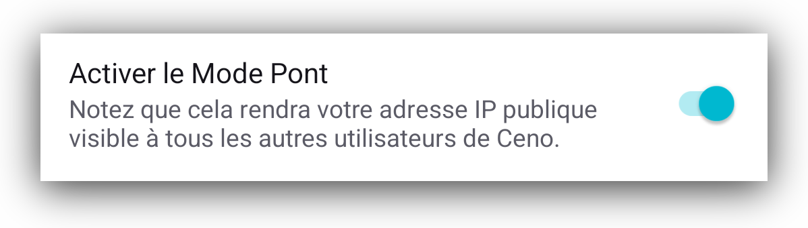
Le but et la fonctionnalité de haut niveau du mode passerelle sont décrits dans la section Section mode passerelle. Ici vous pouvez activer ou désactiver ce réglage.
Mesures d'arrière-plan
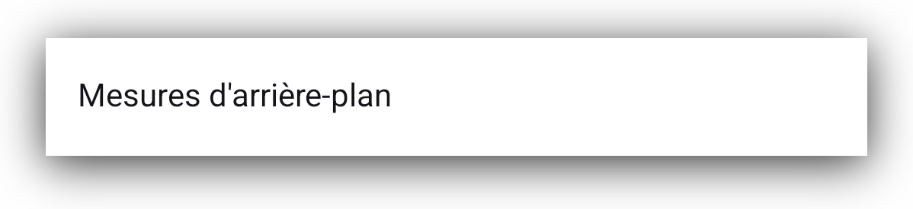
Ce sont des métriques qui nous aident à comprendre tout problème qui pourrait se produire de temps en temps pendant que vous utilisez le navigateur Ceno. Appuyer sur les métriques d'arrière plan ouvrira l'écran vous donnant des options pour désactiver les métriques.
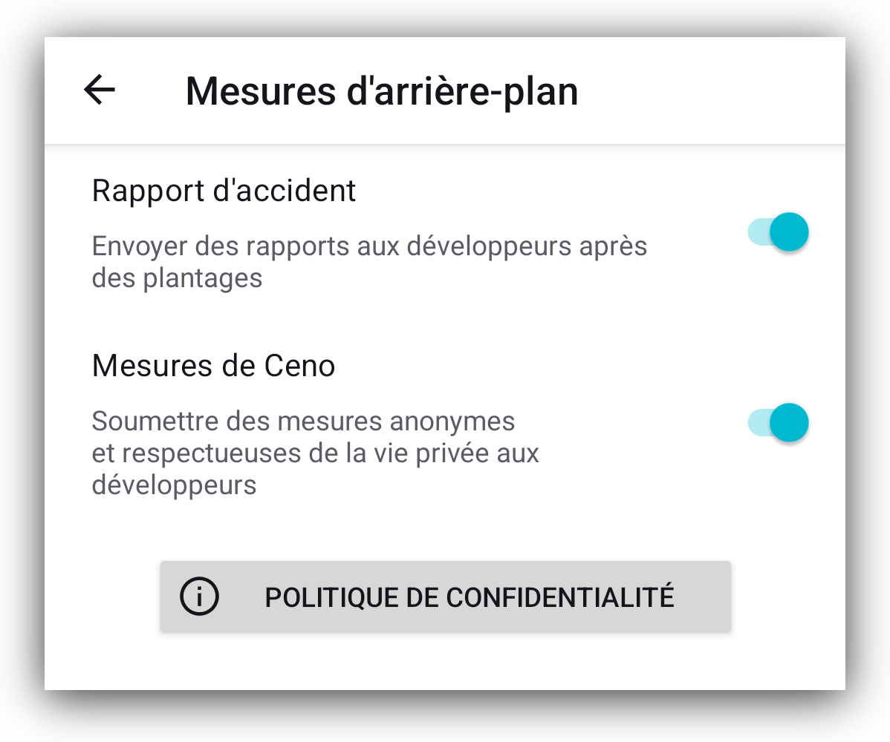
Nous recommandons que ces paramètres soient maintenus en position On, car ils nous aident à comprendre les problèmes que certains utilisateurs peuvent rencontrer en utilisant Ceno. Plus nous sommes capables de comprendre les problèmes, plus nous sommes capables de les résoudre.
Nous ne recueillons aucune donnée personnelle et nous ne vendons aucune donnée à des tiers. Pour lire notre politique de confidentialité, cliquez sur le bouton Politique de confidentialité.
Rapport d'incident
Les circonstances, les conditions de réseau et les dispositifs dans lesquels Ceno est utilisé sont différents pour différents utilisateurs, ce qui peut parfois causer le crash de l'application Ceno. Pour comprendre ce qui a causé un accident dans une situation particulière, Ceno a été conçu pour générer des rapports d'accident et les envoyer à l'équipe de développement. Vous, en tant qu'utilisateur, pouvez activer ou désactiver l'envoi du rapport de récupération de crash.
Ces rapports ne contiennent aucune donnée personnellement identifiable. Si vous subissez des incidents de Ceno, nous vous recommandons d'activer ce réglage
Suppression des données de navigation
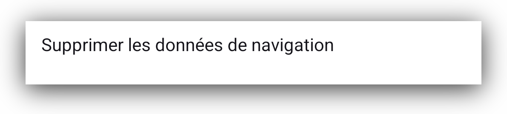
Appuyer sur cette option vous permet de sélectionner les données Ceno que vous souhaitez supprimer.
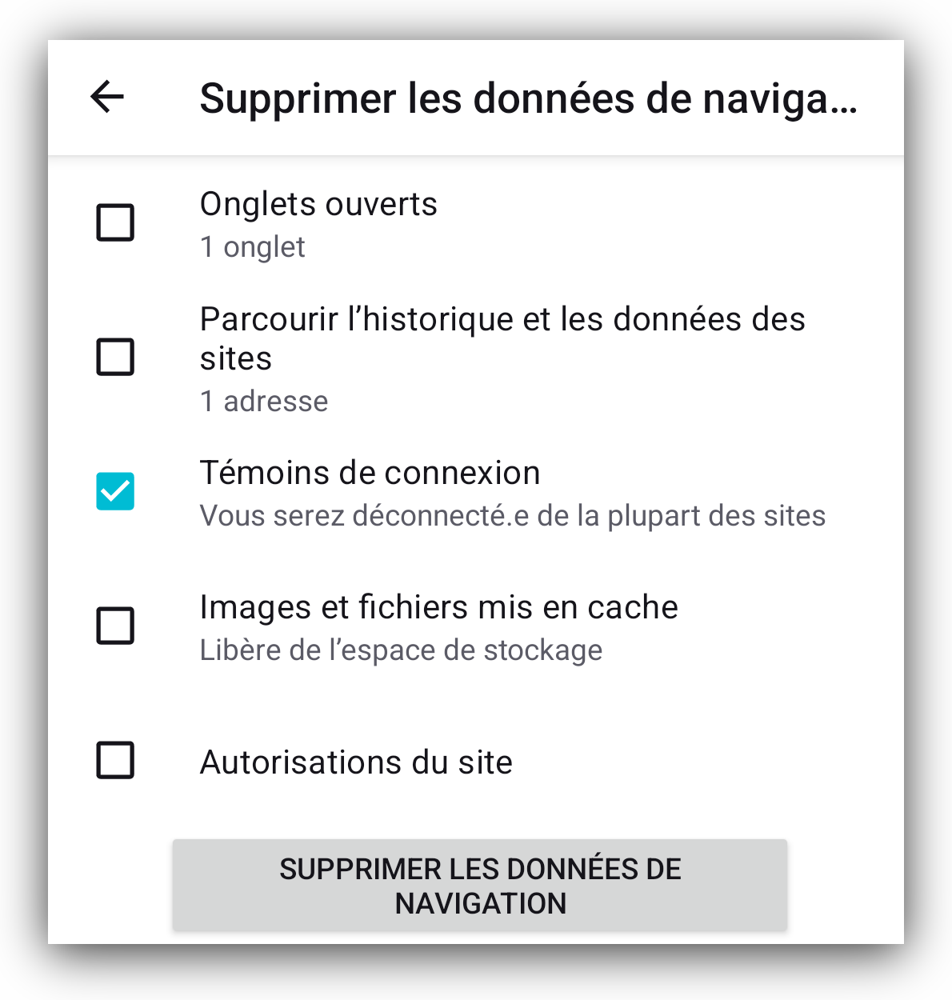
Le bouton Effacer sur l'écran d'accueil supprime toutes les données Ceno, mais ici vous pouvez choisir quoi supprimer et quoi garder.
Changer de langue
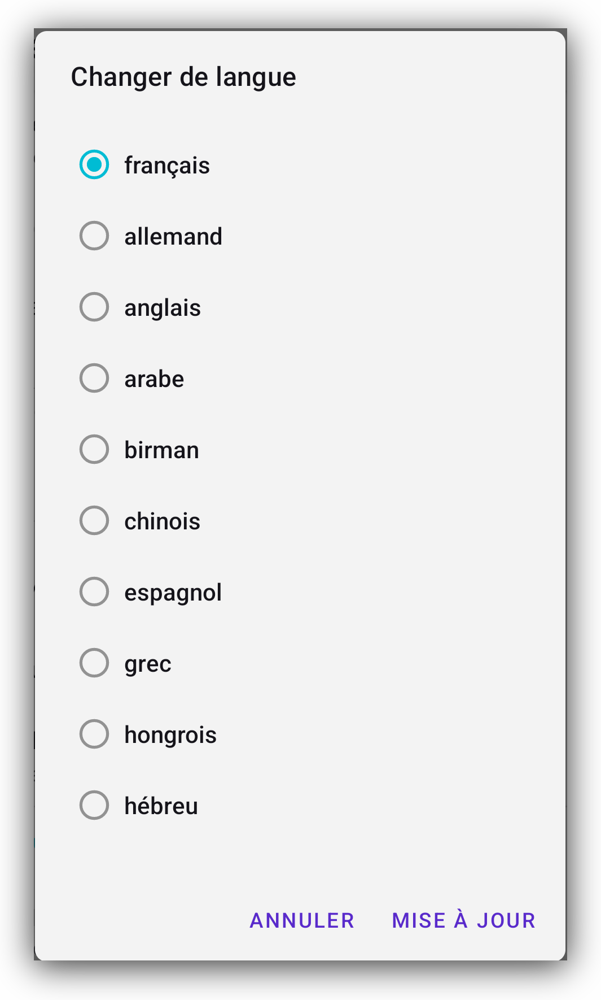
Cette application a été traduite en plusieurs langues. S’il y a une langue que vous souhaitez voir ajoutée à cette liste déjà exhaustive, veuillez nous le faire savoir. Vous pouvez nous contacter par email à support [at] ceno [dot] app ou via notre dépot gitlab .
Paramètres : Permissions
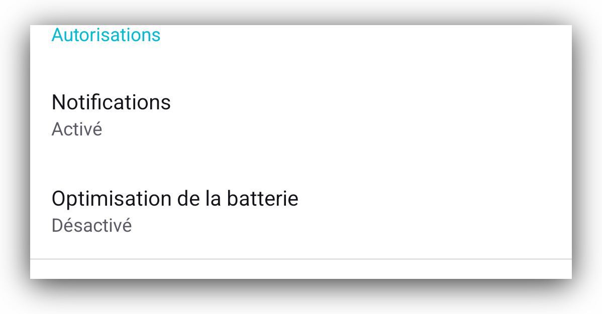
Ceno n'a besoin que de deux permissions : envoyer les notifications utilisateur et arrêter l'optimisation de la batterie. On vous a probablement demandé de donner ces permissions à Ceno quand vous avez commencé l'application Ceno, ou après un redémarrage après le nettoyage de toutes les données Ceno.
Vous pouvez en savoir plus sur eux dans la section [Permissions] (./first-time-run.md#permissions).
Paramètres : Données
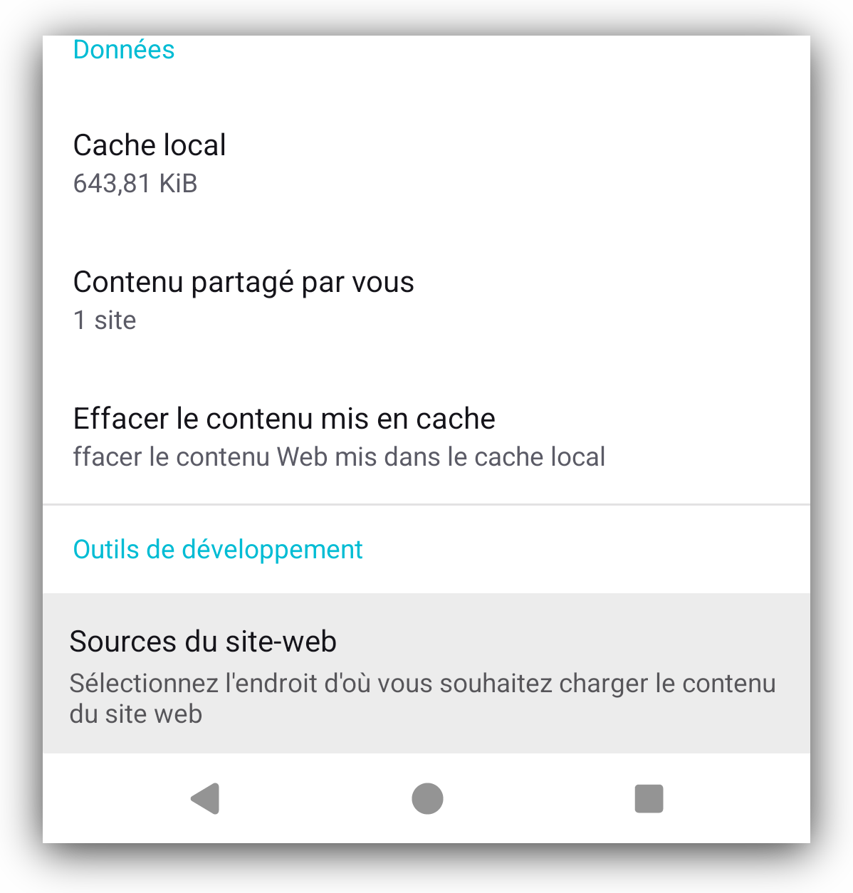
Dans cette section, vous pouvez voir quel contenu votre application Ceno peut partager avec d'autres utilisateurs de Ceno lorsqu'ils le demandent.
Contenu que vous partagez liste les sites Web que votre navigateur Ceno est en mesure de partager avec d'autres utilisateurs de Ceno.
Le cache local vous informe combien de données peuvent être téléchargées depuis votre appareil sur le réseau Ceno lorsque d'autres utilisateurs les demandent.
L'option Nettoyer le contenu mis en cache supprimera les données de votre cache et il ne restera rien à partager avec vos pairs. Pour mettre en cache des sites Web et être en mesure de les partager avec vos pairs à nouveau, vous devrez y accéder via le réseau Ceno Public à nouveau.
Plus d'informations sur le but de ces réglages sont disponibles dans la section Public ou Personnel.
Paramètres : Outils de développeur
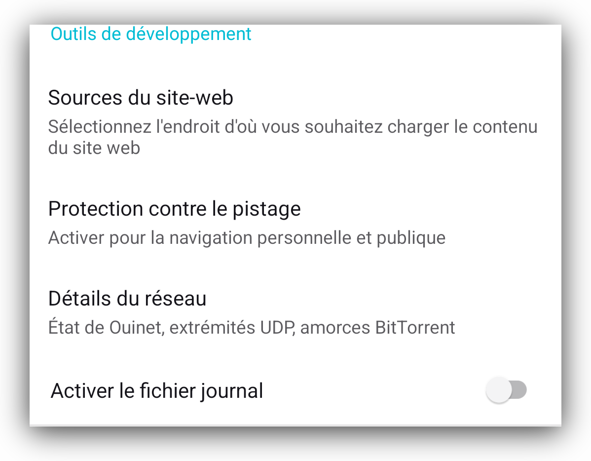
Sources de sites Web
Ceno est en mesure de récupérer le contenu du site que vous demandez à partir de
différentes sources : directement depuis le site d'origine, le réseau public
Ceno, le réseau privé Ceno et le cache Ceno. Plus de détails sur ces options
sont disponibles dans les sections détaillant les modes de navigation Public et
Personnel.
Par défaut, toutes ces options sont cochées et pour de meilleurs résultats, vous
pouvez simplement les laisser comme elles sont.
Vous pouvez lire des informations plus détaillées sur ces options dans la section [Public ou Personnel] (./public-or-personal.html).
Protection contre le suivi
Ces deux paramètres empêchent que vos activités en ligne soient suivies par des tiers.
Détails du réseau
Cette section contient des détails sur les paramètres de votre réseau, qui peuvent être utiles à notre équipe de développement si nous avons besoin d'enquêter sur les problèmes que vous nous signalez.
Activer le fichier journal
Activer et exporter le fichier journal Ceno peut être utile lors de l'enquête sur les problèmes. Ces fichiers ne contiennent pas de données personnelles identifiables. Si vous les exportez vers le système de fichiers sur votre appareil, vous pouvez voir leur contenu. Vous pouvez également les partager avec notre équipe de développement lorsque vous éprouvez des problèmes qui peuvent nécessiter une enquête de nos experts techniques.
Paramètres : À propos
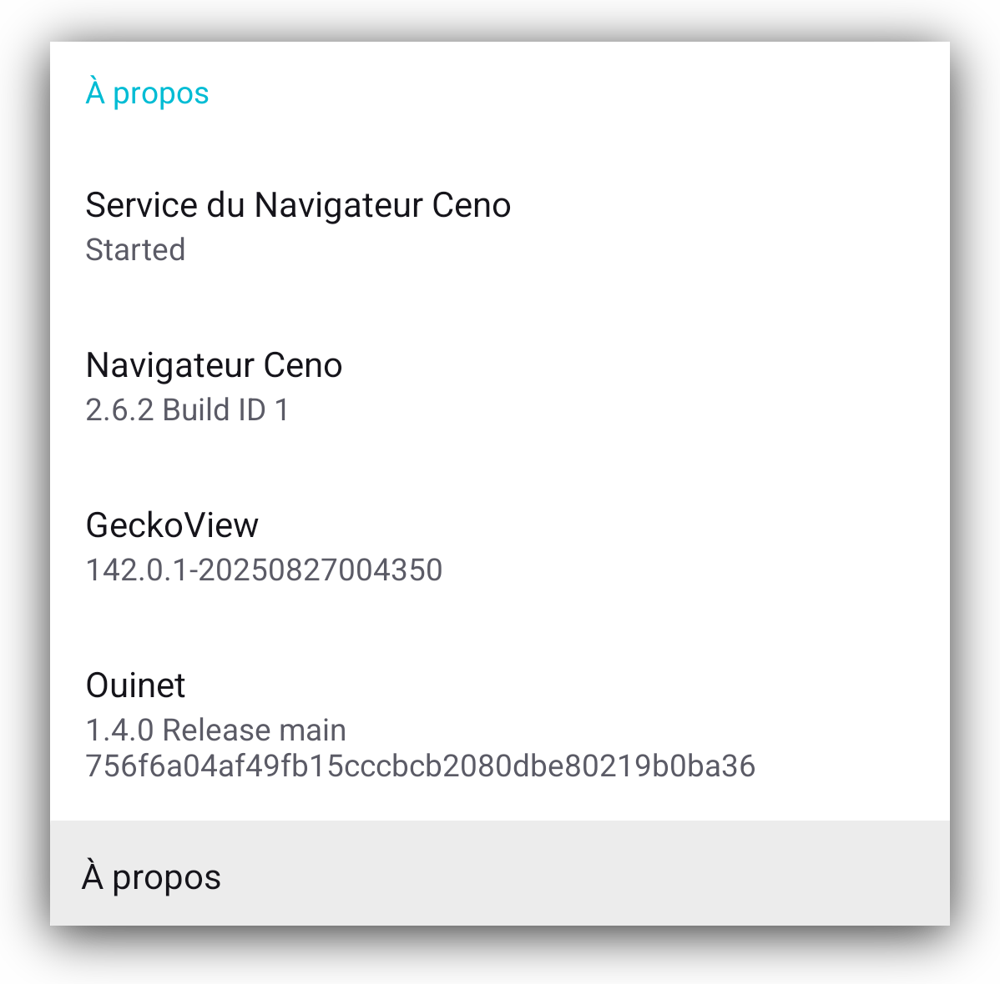
Contient des informations supplémentaires sur votre installation de Ceno, y compris son numéro de version, l'état du service en arrière plan Ceno et le numéro de version de la bibliothèque Ouinet qui est intégrée dans Ceno.